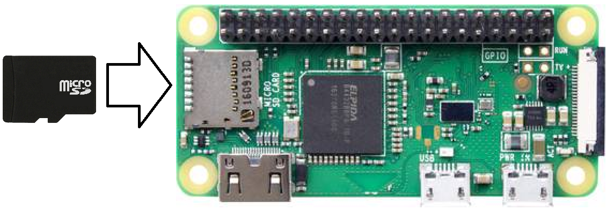
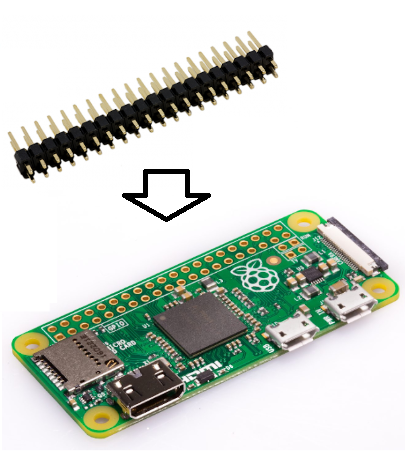
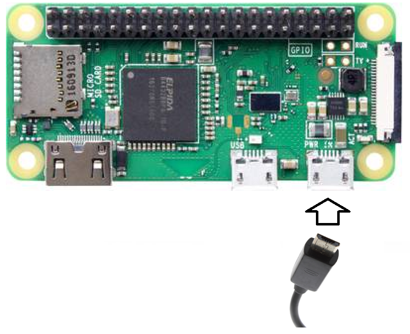
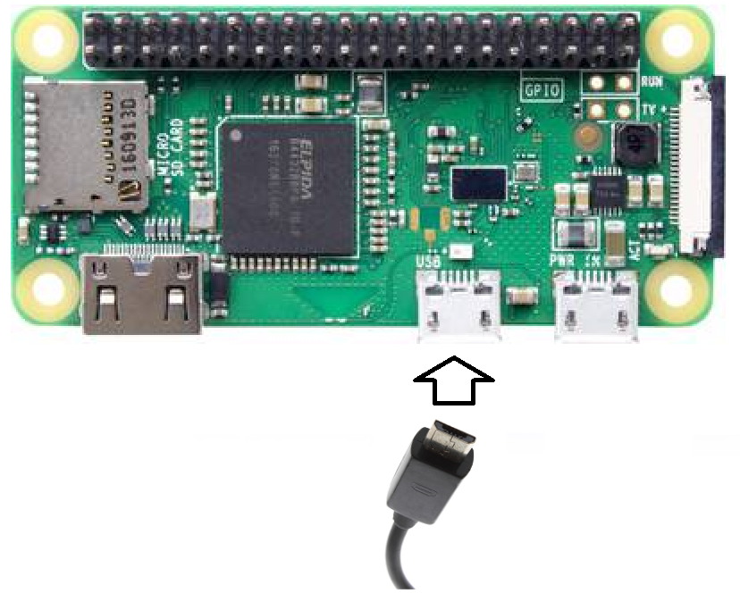

Cette page décrit comment préparer un Raspberry Pi Zéro WH (ou W si le connecteur 40 broches n'est pas déjà soudé). Si vous disposez d'un autre Raspberry Pi, consultez la page correspondante.
Insérez la carte SD configurée dans le Raspberry Pi.
Si le connecteur 40 broches n'est pas déjà soudé sur votre Raspberry Pi, c'est le moment de le souder.
Branchez ensuite la carte QuickPi, ou un shield Grove sur le Raspberry Pi.
Si vous utilisez un chargeur, branchez le chargeur dans le port micro USB PWR IN.
Si par contre vous utilisez un câble USB relié à votre ordinateur, branchez le dans l’autre port micro USB (port données).
